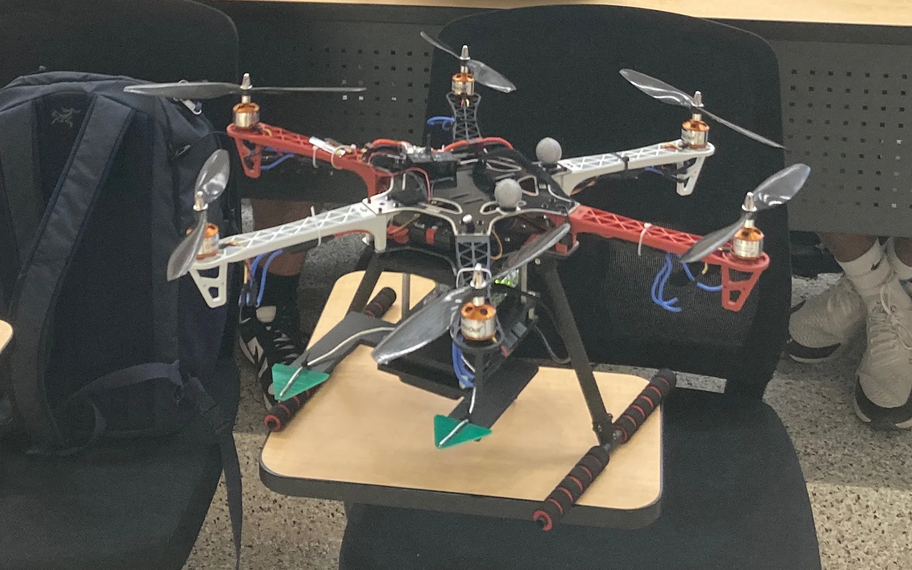

Robotics · Hardware build
Hexacopter for synthetic aperture radar imaging
With a team at Syracuse University's College of Engineering in summer 2025, I built a hexacopter that carries a PulsON 440 ultra-wideband radar, a Pixhawk flight stack and a Raspberry Pi.

I wrote the Python that forms radar images by backprojection with motion compensation, and the images reached a resolution under 10 cm.
The problem
A radar small enough for a drone has a small antenna, so one pulse gives range and almost no sideways detail. Synthetic aperture radar (SAR) recovers that detail from motion: the radar records pulses along a flight path, and software combines them as if one long antenna had taken them.
That only works if the radar's position at every pulse is known to a fraction of a wavelength. The PulsON 440 transmits from 3.1 to 4.8 GHz, where a wavelength is about 6 to 10 cm. Its low transmit power limits radar range to a few tens of meters, so the aircraft has to fly close to the scene.
Wobble or drift on the scale of a wavelength smears the image, so the result depends on how steadily the aircraft flies and how well the software corrects for where it really was.
What I built
I built this with a team in summer 2025 at Syracuse University's College of Engineering. My parts were the radar integration, the powertrain and the image processing.
The aircraft is a hexacopter on an F550 frame. A Pixhawk flight stack flies it autonomously during data collection, and a Raspberry Pi is the onboard computer. In radar mode the PulsON 440 transmits on one antenna and receives on a second. The photos show two green antenna boards hanging below the frame.
I integrated the radar with the Pixhawk and the Pi, and tuned the powertrain so the aircraft flew more steadily during autonomous data collection.
The processing is Python. Backprojection builds the image pixel by pixel: for each pixel it works out the round-trip distance to every radar position, picks the matching sample from each pulse and adds them up. Echoes from a real reflector add in phase and the rest averages toward zero.
Motion compensation corrects each pulse for the aircraft's actual position. The whole computation scales with pixels times pulses, so reconstruction time is worth tracking.
Results
The SAR images reached a resolution under 10 cm, and image reconstruction latency fell by 40%. After the powertrain changes, flight stability during autonomous data collection improved by 20%.
The photos, taken on August 1, 2025, show the aircraft on the bench and inside a netted indoor flight area.
Limits and next steps
I have no radar images, flight logs or code published from this project, so the figures above come without their test conditions.
The airframe is a standard F550 frame. A radar image of a known target, with the conditions behind each figure, would make the results checkable.
Ask a question about this project
An AI assistant answers from this site's text. It can be wrong; this page is the source.